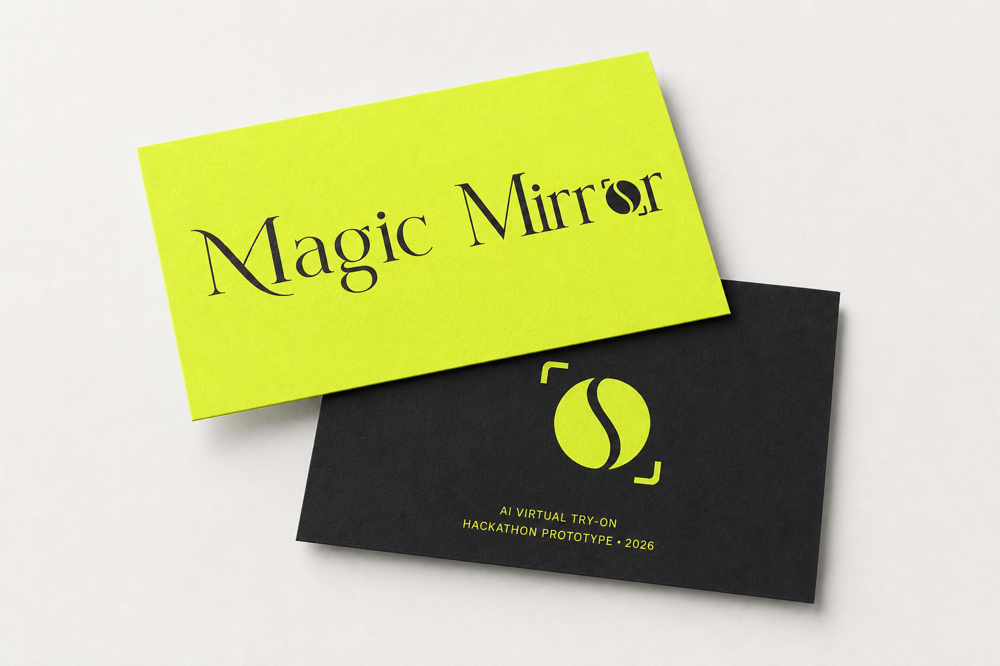
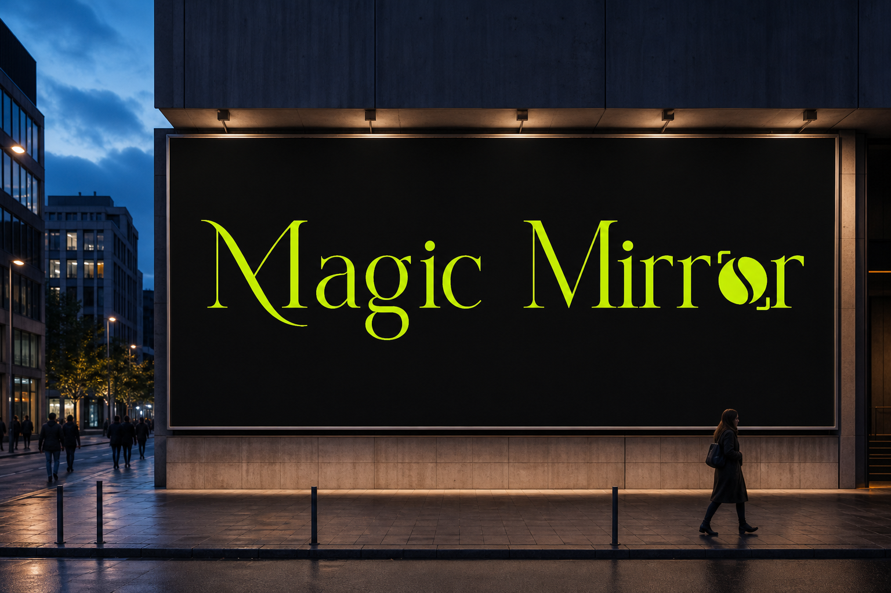
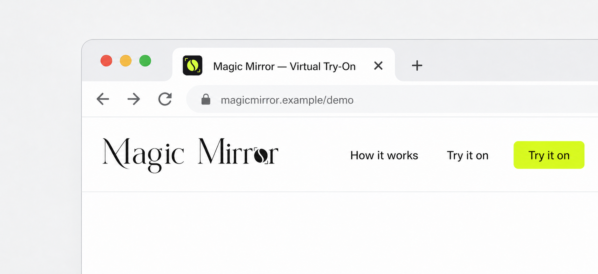
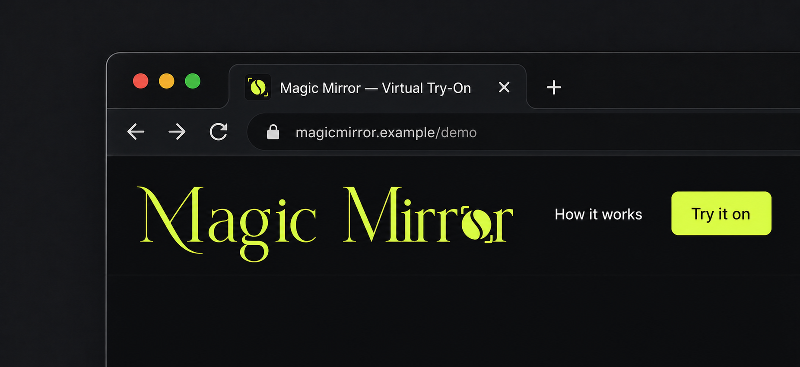
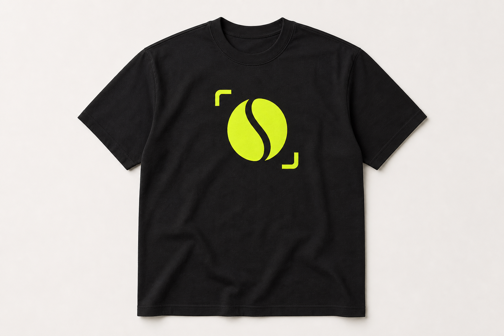
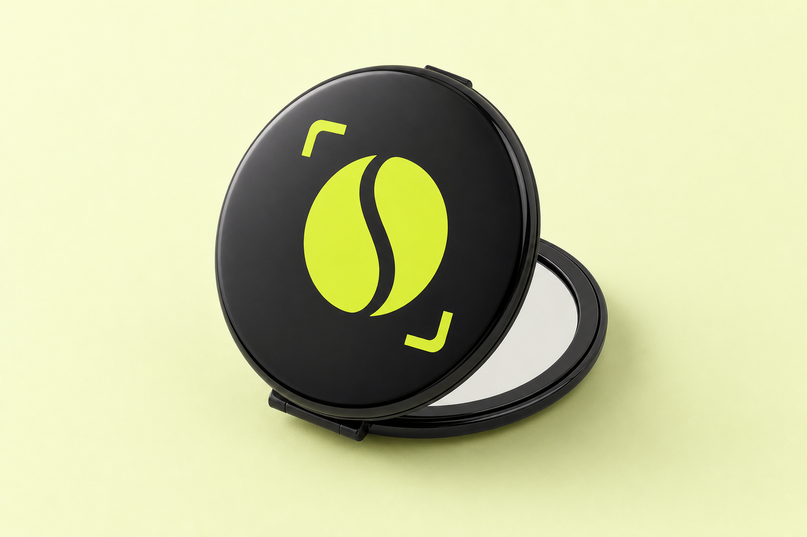

Identity
- Logo on dark 01
- Logo on light 02
- Contents 03
- Logo usage 04
- What to avoid 05
Logo on dark background
Logo on light background
Primary wordmark / Ink on White
Contents
A practical identity system for the hackathon prototype—from logo rules and color to product-facing applications.
Instrument Serif
Space Grotesk
Logo usage
Choose the form that remains unmistakable at the intended size. Never rebuild or recolor the artwork.
Primary editorial signature for navigation, presentations, and quiet brand moments.
Use for hero moments when the lens icon can stay distinct inside the wordmark.
Use for app, profile, and product applications at 32 px and above.
Below 32 px, switch to the simplified production favicon rather than shrinking the full icon.
What to avoid
Use supplied production assets exactly as they are. These treatments weaken the identity.
No stretching, compression, rotation, or altered proportions.
No gradients, shadows, outlines, glows, or decorative treatments.
No low-contrast placement, unapproved recolors, or full-icon use below 32 px.
Primary colors
The operational set is direct and high contrast. Pale and Deep extend the system without introducing new hues.
#D7FF3FSignature / action
#17171AText / dark surface
#FFFFFFPrimary canvas
#F4F3F1Quiet surface
#F2FFD0Supporting light
#263300Supporting dark
Secondary colors
Supporting values use linear OKLab interpolation between Pale, Acid, Deep, White, Cloud, and Ink.
Default brandbook and product background.
#FFFFFFQuiet separation without introducing a new hue.
#F4F3F1Low-intensity Acid support for selected panels.
#F2FFD0High-contrast text and dark application surface.
#17171AButtons and links
Use Acid for decisions, Ink for structure, and a visible focus treatment for keyboard navigation.
Brand elements and guidelines
A small set of repeatable elements makes product and presentation surfaces feel related.
Upload one photo. Choose one garment. See the result.
Use uppercase labels for render and prototype states.
“Confidence before checkout.”
Keep editorial copy short and purposeful.
Reserve Acid for active or actionable moments.
Colors compliance matrix
AA requires 4.5:1 for normal text and 3.0:1 for large text. The matrix shows all approved anchor pairings.
Business card mockup

Billboard mockup

Favicon mockups
Separate light and dark scenes keep the favicon, tab title, navigation, and page identity realistic in both modes.


Twitter/X mockup
The avatar, handle, profile controls, and tabs make the platform clear without implying a live account.
LinkedIn mockup
A company view and Experience card create a recognizably LinkedIn application—not a relabeled social profile.
T-shirt mockup

Merchandise mockup

Typography
Use the display face for short editorial moments and the sans for product UI, labels, tables, and body copy.
AI virtual try-on for more confident clothing decisions. Use this voice for guidance, status states, and form labels.
Aa Bb Cc Dd Ee Ff Gg Hh Ii Jj Kk Ll MmTypography what to avoid
Do not make users work to understand upload guidance, garment choices, render states, or photo-retention information.
×Too much space between lines
×Too little space between lines
×Letters too close together
×Letters too far apart
×Too-small body text
×Overusing the display face